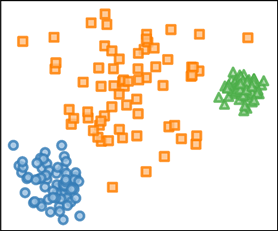

Description
A hierarchical clustering corresponds to recursively dividing a dataset into increasingly smaller groups. The fundamental assumption of this approach is that the visible structure in the data depends on the chosen scale of observation. This hypothesis has been confirmed, in theory and in practice, on many complex data such as social networks, electrical networks, actor networks, computer networks, cortical brain networks, linguistic networks, etc. Building high quality hierarchical representations is therefore an important step in the analysis and in the understanding of these data. The hierarchical clustering methods used today are essentially unsupervised and are based on heuristic algorithms: therefore, the hierarchical clustering obtained does not correspond to the optimization of an explicit criterion. These limitations are due to difficulties in solving optimization problems on these structures, as they are generally NP-complete.
In this project, we propose to study the problem of optimizing hierarchical clusterings from the angle of optimizing ultrametrics which are a dual and continuous representation of hierarchical clusterings. In topology, an ultrametric distance is obtained by replacing the triangular inequality by the ultrametric inequality, which requires that any triplet of points forms an isosceles triangle where the two equal sides are at least as large as the third side. This ultrametric inequality imposes a new non-convex constraint which is difficult to manage. We can nevertheless reformulate the problem of optimization of ultrametrics to make this constraint implicit. It then becomes possible to optimize ultrametrics with gradient descent algorithms. This project aims to develop this possibility to obtain supervised learning methods for hierarchical clustering working on large datasets. In other words, we will formulate the problem of supervised hierarchical clusterings learning on the continuous space of ultrametrics, hence the name of the project: ULTRA-LEARN.
 Evolution of the dendrogram (right) representing a hierarchical clustering of a 2d point cloud composed of three clusters (left) during the continuous optimization of Dasgupta's hierarchical cost function relaxation.
Evolution of the dendrogram (right) representing a hierarchical clustering of a 2d point cloud composed of three clusters (left) during the continuous optimization of Dasgupta's hierarchical cost function relaxation.
This progress will be based on two main ingredients. The first one is the development of ultrametric networks, i.e. models which can be trained, and which will output ultrametrics. An ultrametric network will itself be made up of two elements, a multilayer neural network for the extraction of characteristics and an ultrametric layer which will be able to produce an ultrametric from the characteristics provided by the neural network. This ultrametric layer will be differentiable: this will allow us to learn the parameters of the network end-to-end. The second ingredient of the method will be the definition of cost functions to measure the dissimilarity effectively and differentially between two ultrametrics. All these elements will also benefit from algorithmic development to operate on highly parallel hardware such as GPUs to allow the processing of large datasets.
The ultrametric networks developed will be applied on three problems. We will propose an ultrametric network to estimate hierarchical segmentations of images, i.e. the complete decomposition of an image into objects and the iterative refinement of these objects into parts. The second application will aim at the development of a classifier taking advantage of a class ontology known a priori, for example we know that a cat and a dog are both mammals and that they are semantically closer than a bird. Finally, the third application considered is the hierarchical semi-supervised grouping of data; in this case, we will seek to construct an optimal hierarchical grouping based on partial information given a priori by an expert.
Members
The project team is composed of 4 permanent researchers all affiliated with LIGM,ESIEE Paris,Université Gustave Eiffel.
Permanent members
Students
- Wagner Rodrigues, Master Thesis, École polytechnique,
Supervised end-to-end learning of Hierarchical Clustering via Projection to Target Walking - Carla Yagoub, Master Thesis,ENS Cachan & Centralesupelec,
Deep Hierarchical Clustering - Raphaël Lapertot, Master Thesis, ESIEE Paris, Université Gustave Eiffel,
Apprentissage supervisé de segmentations hiérarchiques d’images et de données
Publications
Published and not yet published works:
Preliminary works
-
Component Tree Loss Function: Definition and Optimization 2021.
 Bibtex
Bibtex
Conferences and journals:
-
Ultrametric fitting by gradient descent.Journal of Statistical Mechanics: Theory and Experiment, 12, 124004 (2020) doi:10.1088/1742-5468/abc62d.
Bibtex
Code
The main developements can be found in the folowing repositories and notebooks:- Higra: Python package for hierarchical graph analysis.
- Ultrametric Fitting by Gradient Descent: optimization of hierarchical loss functions with gradient descent. See companion paper "Ultrametric fitting by gradient descent".
- Component tree loss function: Colab notebook for the continuous optimization of topological loss functions based on component trees. See companion paper "Component Tree Loss Function: Definition and Optimization".